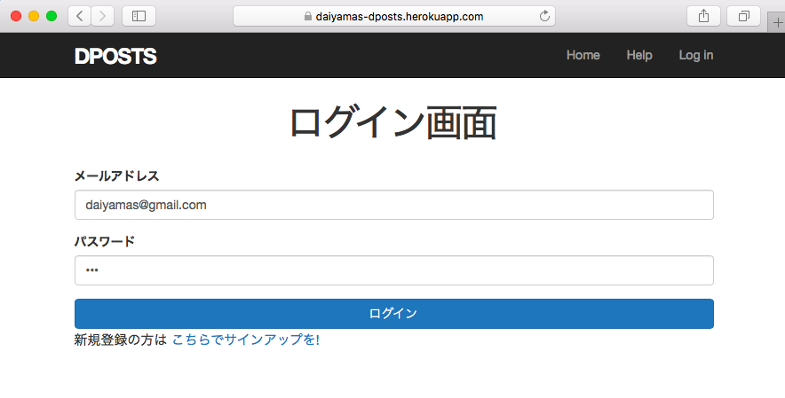
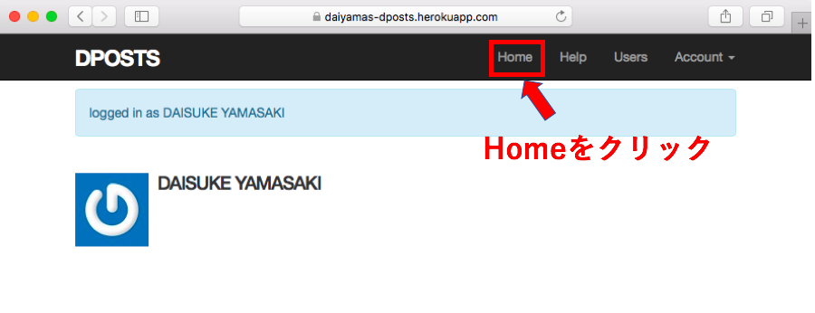
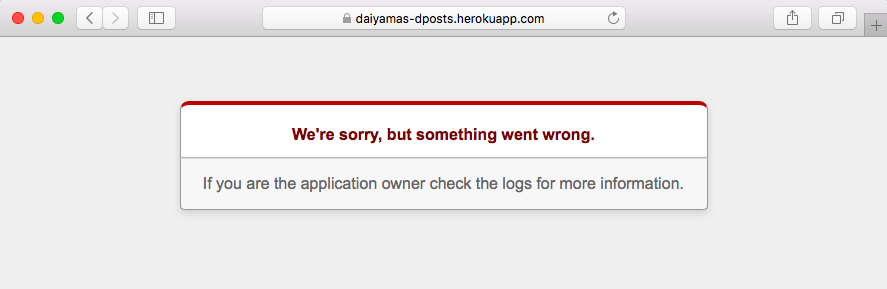

ログインできるが、Homeに遷移しない不具合が発生。
D-postのカスタマイズを終えて、本番環境での動作確認を行いました。 ログイン後のページ遷移途中に不具合が生じています。カスタマイズをかけたことで生じた不具合の 可能性も踏まえ、カスタマイズ前のファイルに戻してHEROKUにデプロイしてみました。
(1)新規アカウントを作成し、ログイン画面からアクセス。 
(2)ログイン後にnavbarの「Home」をクリックすると、 
(3)「Something went wrong」のアラート画面が表示される。 
カスタマイズ前のファイルでも同様の不具合が発生します。Lesson6で作成した際のファイルに 原因があるようです。
ちなみに、不具合の発生すると思われる箇所の記述をチェックしてみたのですが、 パスの記述に間違いないと思われます。
<header class="navbar navbar-fixed-top navbar-inverse">
<div class="container">
<%= link_to "Dposts", '#', id: "logo" %>
<nav>
<ul class="nav navbar-nav navbar-right">
<li><%= link_to "Home", root_path %></li>
<li><%= link_to "Help", '#' %></li>
<% if logged_in? %>
<li><%= link_to "Users",users_path %></li>
<li class="dropdown">
<a href="#" class="dropdown-toggle" data-toggle="dropdown">
Account <b class="caret"></b>
</a>
ローカル環境では問題なく動作しているため、特定の方法が見当たらず…。 原因の究明はここまでにして、カスタマイズ後のファイルに戻してひとまず完了とします。